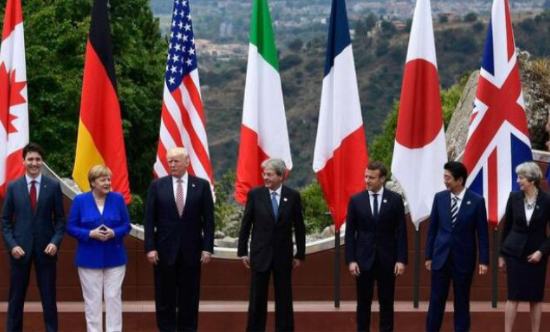

收录于合集
以下文章来源于同济战略派 ，作者乔纳斯·施耐德
 同济战略派 .
同济战略派 .
同济大学中国战略研究院

作品简介
作者： 乔纳斯·施耐德（Jonas Schneider），德国柏林国际关系与安全事务研究院研究员。
编译： 俞钦文
来源： Security Studies, Vol.29,No.5,2020, pp.927-963.
内容摘要

本文集中探讨了美国的联盟体系对核扩散的抑制作用。 现有的研究认为，美国联盟体系中的盟国对于核撤销计划（Nuclear Reversal）的积极作用源自美国联盟体系的对于盟国提供的安全保证或是威胁作用。然而，事实证明这两个功能解释难以概括盟国领导人对于核逆转决定的分歧。 此外，一个盟国是否同意或是拒绝核限制，既取决于国际环境外部因素，也取决去国内政策制定者。为了解释联盟体系中部分国家政策制定者接受或是反对核撤销政策的心理，作者借鉴对美国盟友政治心理学的研究，即认为作为超级大国美国盟友优越性所带来的内生社会压力。 美国借用德国与韩国的研究数据表明，只有承认美国在联盟体系绝对至上地位，而自身处于附庸或是较低地位的盟国，才会遵从美国的核撤销政策来回应内生的社会压力。
内容要点
本文主要介绍了美国盟国领导人选择核武器战略克制的原因。 当前大多数学者与政府官员都认为，是美国在联盟体系中提供了“保护伞”作用以及对盟国的威慑作用，才导致美国盟友的决策者们决定放弃现有的核武器发展计划，也被称为核撤销计划。按照此类逻辑，与美国保持着联盟关系即意味着核心国家美国要承担核保护的义务，因为美国强大的军事能力，尤其是其核武器库，不仅可以阻止对美国本土的外来核威胁，还能够阻止对其盟友领土的供给。 对于美国盟友来说，这种轮辐式的扩展威慑机制，作为盟友体系所提供的安全保障，避免了本土生产核武器形成核威慑的需要。 但是，对于这种以盟国体系保证战略为基础所进行的解释，许多学者也持批评态度，他们认为这高估了美国盟友自身调节受到核威胁的能力，而且也高估了美国能为其盟友提供的安全保障。盟国决策者永远无法确定，他们的美国盟友是否会在美国本土也受到威胁的情况下，会动用军事力量来保护自己的国家。 因而，本文提出一个相对创新的理论，即联盟内部地位理论——它将联盟政策制定者对核撤销计划的态度联系起来，尤其是他们认为他们国家与美国在美国联盟体系中的地位等级制度。为了解释盟国内的政策制定者对核撤销计划的赞成态度，这里理论利用了在美国联盟体系中起关键作用的心理力量，美国能够对其联盟伙伴所提出要求的内生社会压力。 在核扩散领域，美国能够施加的社会压力是与其盟友领导人进行沟通，表明美国倾向于克制。 当盟国政策制定者受到美国这种要求时，他们会感觉到本国行动与美国希望本国如何行事存在着强烈的紧张关系，只要这种紧张关系未能解决，盟友决策制定者就会感受到内在的社会压力。 作者认为，其地位等级制度理论为美国盟友体系与核撤销计划提供了若干点创新观点与贡献：
其一，联盟内部地位理论从两个前提出发，第一强调美国始终反对其盟国获得核武器，美国担忧其盟友持有核武器会自动卷入与西方对抗的政治冲突中。第二，美国反对核扩散的态度将对盟友国家领导人态度造成很大影响。 作者通过对德国和韩国的研究，区分了持有高低地位之分的盟友关系与平等盟友关系对核撤销计划的态度。他认为，对盟友体系内部地位的不同看法。美国领导地位的合法性取决于其他行动者是否接受美国在盟友体系中享有优越地位。 因此，拥有低下地位观念的盟友将美国视为一个合法的权威机构，从而授予他对本国部分主权的非正式控制；相反，持平等观念的盟友则会对美国发出必须服从的命令提出抗议。
**
**
其二，联盟内部地位理论对社会压力的关注拓宽了对国际政治尤其是联盟政治的理解。 它引入了一种全新的机制，即除了观念说服与物质激励的操纵手段之外，在关于如何管理与约束其盟友上，本文通过对内部地位的认同感来解释地位低下的自我形象能够进一步实施核撤销计划，从而有助于稳定与冲突的解决。
其三，理论认为盟国政策制定者对美国要求核撤销计划的回应来自他们对美国地位的看法。 特别是这种内部地位认识可以使美国政府根据盟友对联盟内部地位的概念，调整其针对盟国关于防止核武器扩散的努力。可以肯定的是，政策制定者的地位认知来自于美国不可能被任何政府牵制或是操控的肯定性。 然而，美国可以对其盟国决策制定者进行施压，并努力孤立这些持平等观念的国家。美国将通过这些社会压力来促使盟友逆转核撤销计划的相应政策。
**
**
本文通过对德国与韩国关于核撤销计划态度的观察，进一步佐证其联盟内部地位理论的观点， 文章认为，各国领导人对美国及其本国在联盟体系的地位认知将对联盟内部安全计划协调存在极其重要的作用，它有助于解释为什么防止和扩散计划实施的缺陷以及华盛顿如何调节其盟友体系而进行体系内部的防止和扩散计划。
排版 | 柴昕彤
本文来自同济战略派公众号，文章不代表本平台观点。